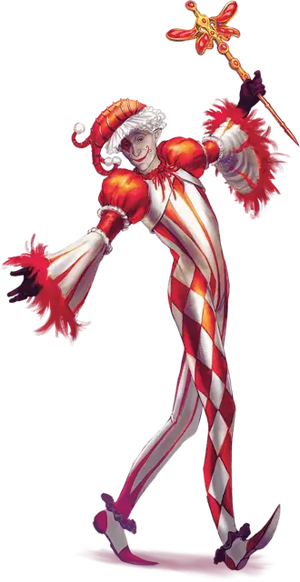

Господин Свет
Mister Light
Средний Гуманоид (Эльф, Шадар-кай), хаотично-добрый, именной НИП

Класс Доспеха 13
Хиты 77 (14к8 + 14)
Скорость 30 футов
| мод | спас | ||
|---|---|---|---|
| СИЛ | 10 | +0 | +0 |
| ЛОВ | 16 | +3 | +5 |
| ТЕЛ | 12 | +1 | +1 |
| мод | спас | ||
|---|---|---|---|
| ИНТ | 12 | +1 | +1 |
| МДР | 13 | +1 | +1 |
| ХАР | 17 | +3 | +5 |
Навыки Восприятие +3, Выступление +5, Ловкость рук +5
Уязвимость к урону электричество
Сопротивление урону некротическая энергия
Иммунитет к состояниям глухота, окаменение, ослепление, ошеломление
Чувства тёмное зрение 60 футов, пассивное Восприятие 13
Языки Общий, Сильван, Эльфийский
Опасность 3 (700 опыта)
Бонус мастерства +2
Особенности
Наследие фей. Свет имеет преимущество в спасбросках от очарования и он не может быть усыплен при помощи магии.
Особое снаряжение. Свет носит с собой и настроен на флюгер Сумеречного Света [Witchlight vane]. В руках господина Света флюгер - фехтовальное оружие.
Действия
Мультиатака. Свет совершает две атаки Флюгером Сумеречного света.
Флюгер Сумеречного света. Рукопашная атака оружием: +5 к попаданию, досягаемость 5 футов, одна цель. Попадание: 6 (1к6+3) дробящего урона плюс 4 (1к8) урона излучением.
Использование заклинаний. Пока Господин Свет носит Флюгер Сумеречного света, он может наложить одно из следующих заклинаний, не затрачивая компонентов и используя Харизму в качестве базовой характеристики (Сл спасброска от заклинаний 13, +5 к попаданию атакой заклинанием):
• Неограниченно: пляшущие огоньки [dancing lights], превращение [polymorph] (после накладывания совершите бросок к8; при выпадении 3 или 8, Свет не может наложить это заклинание снова до следующего рассвета), луч холода [ray of frost].
Бонусные действия
Благословение Королевы воронов (1/день). Свет телепортируется вместе со всем своим снаряжением в любое видимое им свободное пространство в 30 футах от него. До своего следующего хода он становится похожим на призрака и получает сопротивление всем видам урона.
Описание
Свет, ранее известный как Урмиус Амбрадж, принадлежал к гадкой богатой семье шадар-каев, которая обитала в разрушающемся особняке в Мракобродье. Хотя в детстве он ничего не хотел, Урмиус оказался окружен членами семьи, воспитателями и учителями, которые были одинаково холодны, черствы и злобны. Он устал от того, что его считали не более чем наследником имущества и наследия семьи Амбрадж, и сделал все возможное, чтобы сделать жизнь всех вокруг, особенно своих родителей, несчастной. Он казался лишенным амбиций и проводил большую часть времени, играя в своей комнате. Он коллекционировал костюмы и не любил ничего больше, чем расхаживать по особняку Амбрадж в странных одеждах и с необычным макияжем.
Урмиус впервые встретил Наэрикса Крумпела на семейном ужине и сначала был не слишком высокого мнения о хранителе часовой башни. Но Урмиус был ошеломлен способностью Наэрикса находить хоть немного радости в своей работе. Ему не терпелось узнать Наэрикса получше, хотя Наэриксу потребовалось некоторое время, чтобы довериться ему. Добыв денег, Урмиус купил маленький унылый карнавал, стоявший лагерем на окраине Мракобродья, и попросил Наэрикса помочь ему управлять им. Для Урмиуса карнавал был шансом выйти из тени своей семьи и стать хозяином своей судьбы, но это также означало отказаться от своего наследства, чтобы принять нетрадиционный образ жизни, моду и дружбу, которых он желал.
Описание господина света
Господин Свет имеет стройную фигуру. Он всегда одет в какой-нибудь костюм и его редко можно увидеть на публике без макияжа. Он носит с собой причудливый флюгер, подаренный ему предыдущим владельцем карнавала. Он вертит его и размахивает им, как скипетром шута, но сила Флюгера гораздо больше, чем Свет позволяет о нем думать. С помощью этого волшебного флюгера он может влиять на настроение всех участников Карнавала Сумеречного Света.